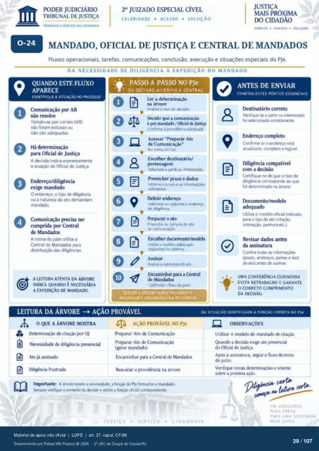

Transcrição automática em português, ainda não revisada. Confira grafia, prazos e termos jurídicos na imagem e no PDF antes de utilizar.
TRABALHO A SERVIÇO DA c IDAOANIA
CELERIDADE • ACESSO • SOLUÇÃO
socuç0ts
0-24
MANDADO, OFICIAL DE JUSTIÇA E CENTRAL DE MANDADOS
Fluxos operacionais, tarefas, comunicações. conclusão, execução e situações especiais do PJe.
DA NECESSIDADE DE DILIGÊNCIA À EXPEDIÇÃO DO MANDADO
QUANDO ESTE FLUXO
APARECE
IDENTIFIQUE A SITUACÀO NO PRCXESSO
Comunicação pr AR não
Tentativas ccxreio (AR) fMam exitosas ou
nào adequadas Há
de Justiça A decisão indica expressarnente
a do Oficial de Justiça Endereço/diligência
exige mandado O o de diligérWa
ou a natureza do ato demandam Comunicação
cumprida Central de Mandados
A rotina do juizo utiliza a Central de Mandados para
chstribulçü) das diligências
A LEITURA ATENTA DA ÁRVORE
O
INDICA QUANDO É NECESSÁRIA
A EXPEDIÇÃO DE MANDALN).
- PASSO A PASSO NO PJe
DA DECISÃO AO ENVIO À CENTRAL
Ler a determinação na árvore
Analise o teor da &cisáo. Ikcidir que a comunicação
é pr maruiacb / de Justiça Confirrne a prove•oa
Acessar "Preparar Ato de Comunicação"
No menu do PJe. Escolher destinatário/
personagem a r»rte interess").
Preencher prazo e dad(S Informe o prazo e as
solK1tadas Selecione ou cadastre o endereço
da diligência. Preparar o ato
Preencha os do ato de cornumcaçáo.
Escolher dcrurnento/rnc") Utilize o modelo
no sistema Assinar
Redize a assinatura do ato Encaminhar para a Central
de Mandados C ("forme o fhno juizo
SEGUIR A ORDEM CORRETA GARANTE
AGILIDADE E SEGURANÇA NA DILIGÊNCIA.
ANTES DE ENVIAR
CONFIRA ESTES PONTOS ESSENCIAIS
[kstinatário correto Verifique a parte ou hteressado
foi sekc•onado corretune-lte. Endereço completo
Confirrne o endereço está completo e legiveL
Diligência compatível com a decisão
Certifique-se de que o tim de diligéncia ao qlÑ
foi ckterminado na árvore. tkxumento/mcEO
adequado Utilize 0 mxxielo Oficial irxiicajo
para 0 tipo ato intimaçao. *nhora etc.).
dados antes da assinatura
Confira tcxias as (prezo. partes e teor
do ato) antes assinar.
UMA CONFERÊNCIA CUIDADOSA
- EVITA RETRABALHO E GARANTE
O CORRETO CUMPRIMENTO
DA DECISÃO.
LEITURA DA ÁRVORE AÇÃO PROVÁVEL
o QUE A ÁRVORE MOSTRA
Ikterminaçào de citaçào por OJ de diligência
Ato já assinado Diligência frustruia
AÇÃO PROVÁVEL NO PJe
Preparar Ato Comunicação Preparar Ato de Comunicação
mandado) Encaminhar para a Central de Mandados
Reavaliar a providência na árvore
DA SITUACÀO IDENTIFICADA À FUNCÀO CORRETA NO PJe
A OBSERVAÇÕES
Utilizar o mocklo de mandado de citaçào. Quando a d«isào exige ato presencial
do Oficial Justiça. Alós a assinatura. seguir o fluxo
do juízo. Verifique novas e oriente
wbre a próxima açào. Inw•tante: A árvore mostra a necessidade; a funçü) do PJe formaliza o marujo.
verifique 0 contexto da e utilize a funç*) Oficial
DIREITO
CIDADANIA
UM JUDICIÁRIO
MAIS FORTE
PARA OMA SOCIEDADE
MAIS JUSTA
Ver também o infográfico original (página 29)
